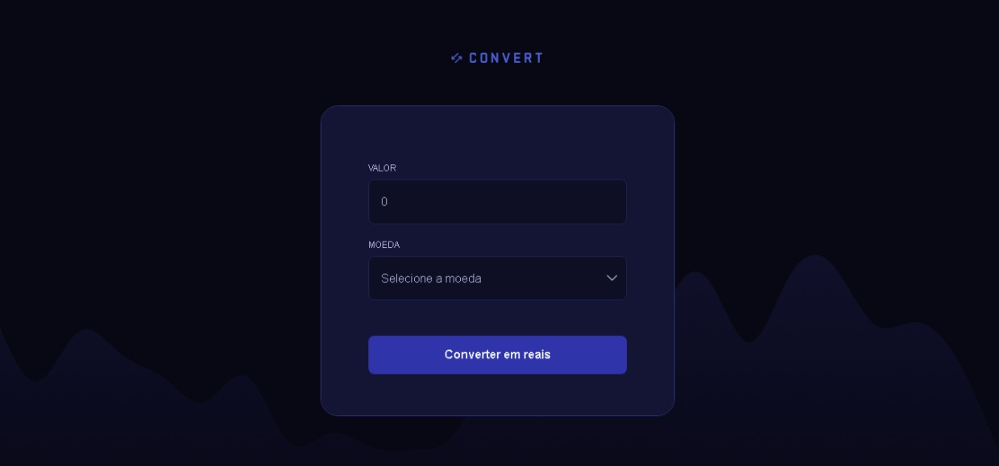

Convert
Sobre o Projeto
Este projeto foi criado utilizando HTML, CSS e JavaScript.
O projeto exibe um conversor de moedas simples que permite ao usuário selecionar diferentes moedas (como Dólar, Euro e Libra) e ver o valor convertido automaticamente para reais brasileiros, com layout claro e interação dinâmica.
Imagem do Projeto

Tecnologias Utilizadas
- HTML5
- CSS3
- JavaScript
- Git e GitHub
Conceitos praticados
- HTML semântico
- Manipulação de elementos com DOM
- eventos DOM
- Funções
- Calculos
- Variaveis CSS
- Flexbox